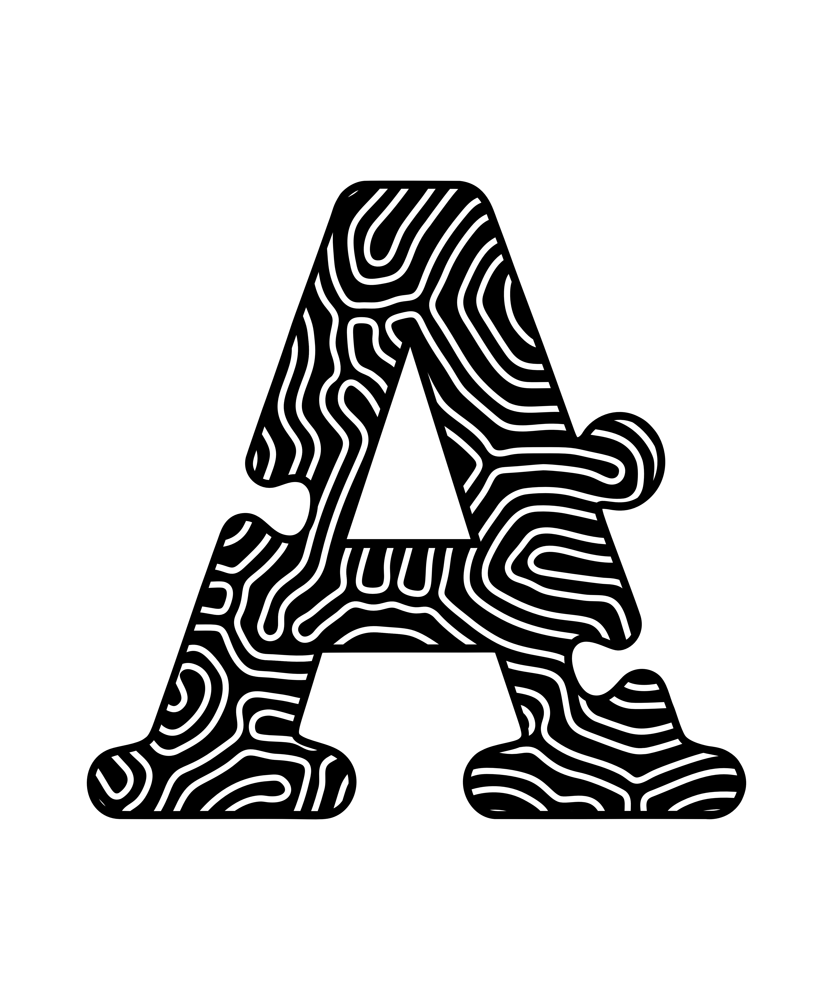

Aphos
A topographic lettermark — structure and flow living in the same surface. One pattern that scales from stamp to poster.
One glyph.
A whole language.
Most lettermarks fail because they stop at the silhouette — shape without texture, form without feeling. The challenge with Aphos was to build a mark where looking closer rewards you. The outer shape is recognisable at a glance; the interior holds an entire visual system.
The answer came from topographic maps — contour lines that trace the shape of terrain. Applied inside a letterform, they turn a flat glyph into something that feels like it has landscape inside it.
"Terrain maps make flat things feel like they contain worlds."
A letterform
with altitude
Topographic contour lines are inherently a system — they follow rules (equidistant, never crossing) that produce infinite variation from a single logic. That makes them a perfect pattern device: the rules stay constant, the terrain always differs.
The notch cut into the right leg of the "A" breaks the seriffed form just enough to make it unmistakably custom — not a typeface character, a designed mark. Combined with the contour fill, the result is a letter that reads as object, not text.
Three colorways,
one system
The mark was developed in three colorways to prove versatility across contexts — screen, print, and mono reproduction. Each colorway shifts the tone of the mark without changing its structure.

Papaver Rhoeas —
pattern at scale
The topographic contour pattern is not locked inside the lettermark. In the Papaver Rhoeas editorial, it scales up to fill the entire surface — becoming a background field against which photography and typography sit. The result tests whether the pattern system holds at macro scale, and whether it produces tension with photographic imagery.
The teal + crimson colorway was developed specifically for this application, pulling from the natural palette of the poppy photograph rather than imposing brand colour onto it.

.png)